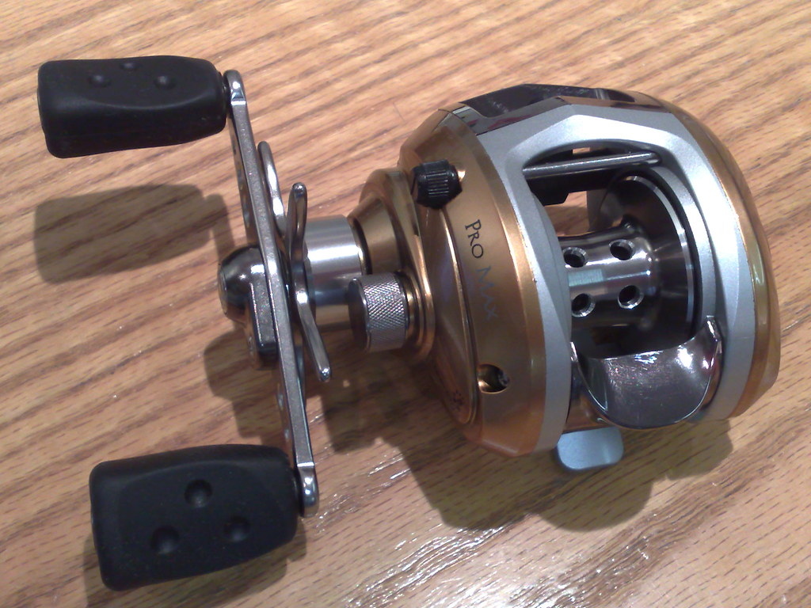
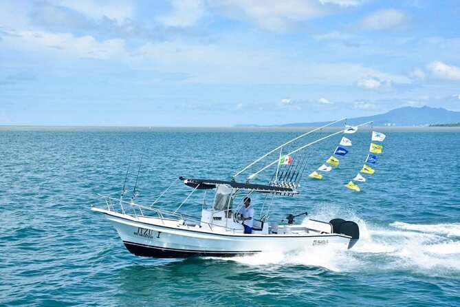

1 Back To Homepage
2 All about lures
4 Strategies For Fishing
Equiptment used for Fishing
Types of Rods and Reels
- Berkly Rods and Reels
- Penn Rods and Reels
- Okuma Rods and Reels
- Phenix Rods and Reels
- Daiwa Rods and Reels
- Dobyns Rods
- Abu Garcia Rods and Reels
- Shimano Reels
- Pflueger President Reels
- KastKing Reels
Lines, Nets, and Boats
- Gillnet
- Seine Nets
- Driftnets
- trawl Nets
- Cast Nets
- Trammal Nets
- Chinese Nets
- Dip Nets
- Traps
- Braided Line
- Wire Line
- Monofilament Line
- Fluorocarbon Line
- Copolymer Line
- SpiderWire Fishing Line
- Bass Boats
- Aluminum Fishing boats
- Bay Boats
- Deck Boats
- Pontoon Boats
- Center Console Boats
- Kayaks
- Flats Boats


